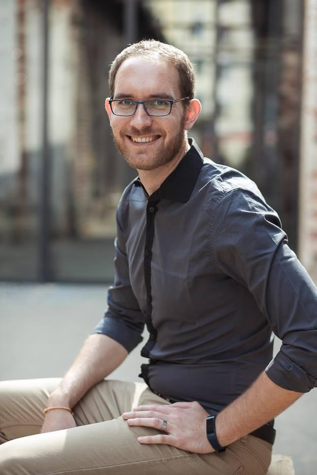

Pomáhám podnikatelům vyznat se v chaosu. Umím pojmenovat věci, které nefungují, a zařídit, aby se zastavili a zamysleli, jak chtějí mít procesy nastavené tak, aby jim v nich bylo dobře a nemuseli na to být sami.
Jsem podpora a pomoc na cestě ke klidnému podnikání. Dám vaší práci strukturu, převezmu část operativy a budu vaší pravou rukou.
Za sebou mám 11 let kariéry v Quality Assurance — v testování softwaru. Většinu z toho v korporátním prostředí. Naučilo mě to hledat souvislosti, nespokojit se s povrchem a říct nahlas, co nefunguje. Prošel jsem i státní správou a prací s lidmi. Dnes podnikatelům pomáhám vidět, co drží, co ne, a jít v tom spolu — ne z povzdálí.
S čím přicházím
- 11 let Quality Assurance. Testování softwaru a zkušenost s korporátem. Přesnost, souvislosti a odvaha pojmenovat chyby dřív, než se z nich stane provozní chaos.
- Pojmenovat chaos. Společně uvidíme, co nefunguje, a zastavíme se dřív, než to zase přeběhne provoz.
- Nastavit věci tak, aby vám v nich bylo dobře. Struktura práce, jednoduché nástroje a pravidla, která drží.
- Být oporou. Část operativy vezmu na sebe. Nemusíte na to být sami.
